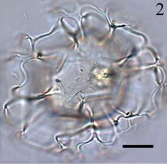
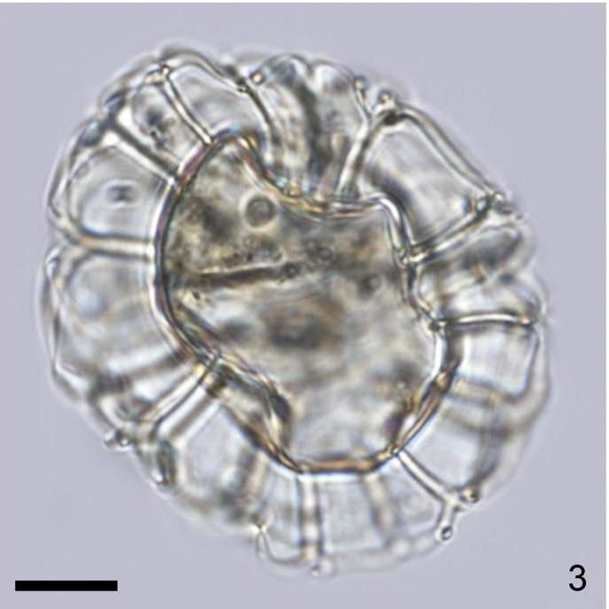
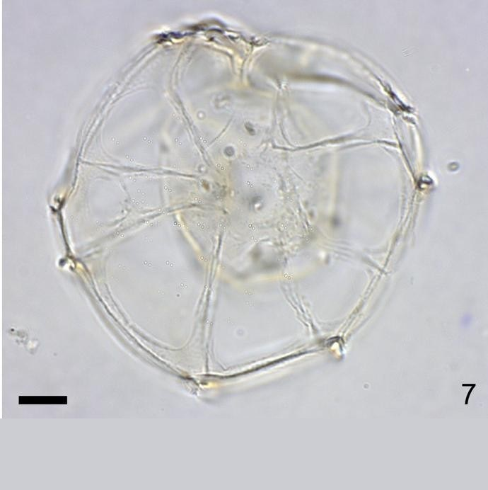
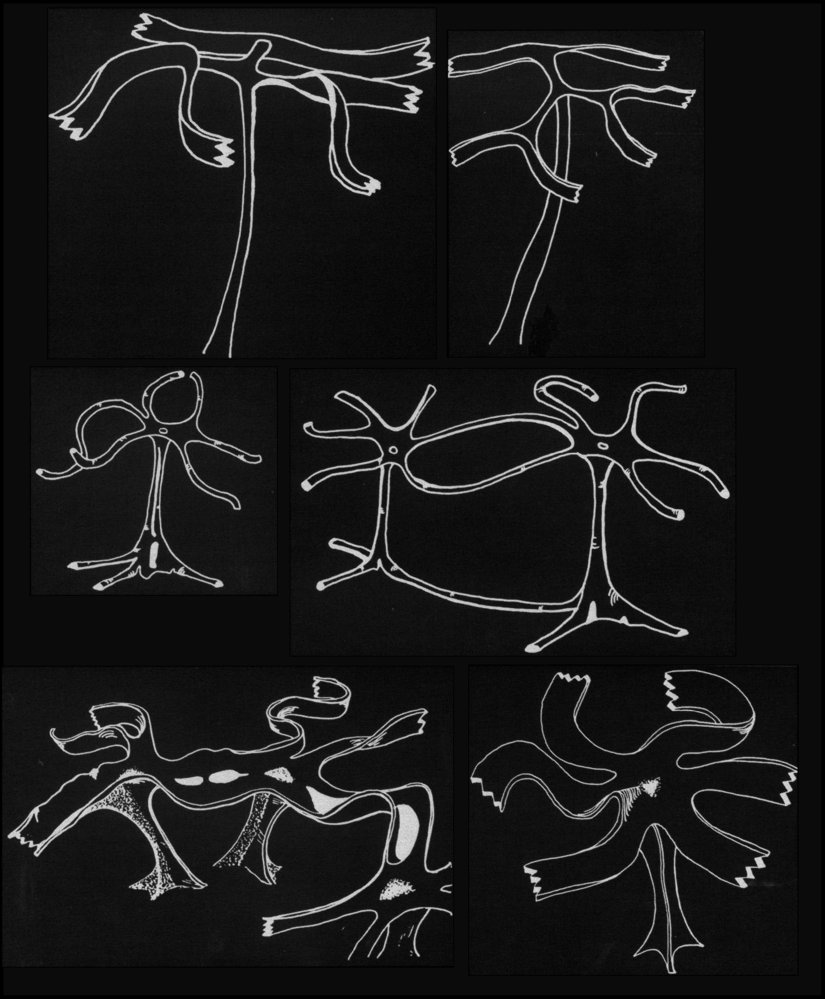

CYSTS LIST
NEMATOSPHAEROPSIS
Surface |
Shape |
ProcessesRemarks |
Species |
Central body (um.) |
Process (um.) |
Image |
SmoothTransparent |
OvoidalSmall apical protuberance |
HollowGonal. SmoothSlender and distal trifurcationParallel ribbon-like trabeculae |
Nematosphaeropsislabyrinthus | 27 to 42 (D) |
11 to 23 (L) |
 |
Smooth |
Subspherical |
Hollow. SmoothCylindricalGonal and intergonalPairs of thin and flat ribbon-like trabeculae |
Nematosphaeropsislemniscata | 23 to 40 (D) |
21 to 32 (L) |
|
SmoothTransparent |
Slightly elongate to egg-shaped |
SolidGonal and intergonalPerforate baseSubrounded trabeculae |
Nematosphaeropsisrigida | 33 to 41 (D) |
8 to 17 (L) |
 |
- |
Ovoidal to spherical |
Gonal (long)Intergonal (short)Fenestrate distallyParallel strands trabeculae |
Nematosphaeropsisscala | 69 to 94 (D) |
- |
|
Transparent |
Subspherical |
Only have a single trabeculae |
Dalellachathamensis | 26 to 28 (C)51 to 65 (T) |
~ > 25 |
 |
GRAPHIC DIFFERENCES

Sketches to various scales, of the types of processes and trabeculae on: 1, 2: Nematosphaeropsis lemniscata Bujak 1984; 3, 4 Nematosphaeropsis rigida sp. nov.; 5, 6: Nematosphaeropsis lativittatus sp. nov. (Wrenn et al., 1955, modified).